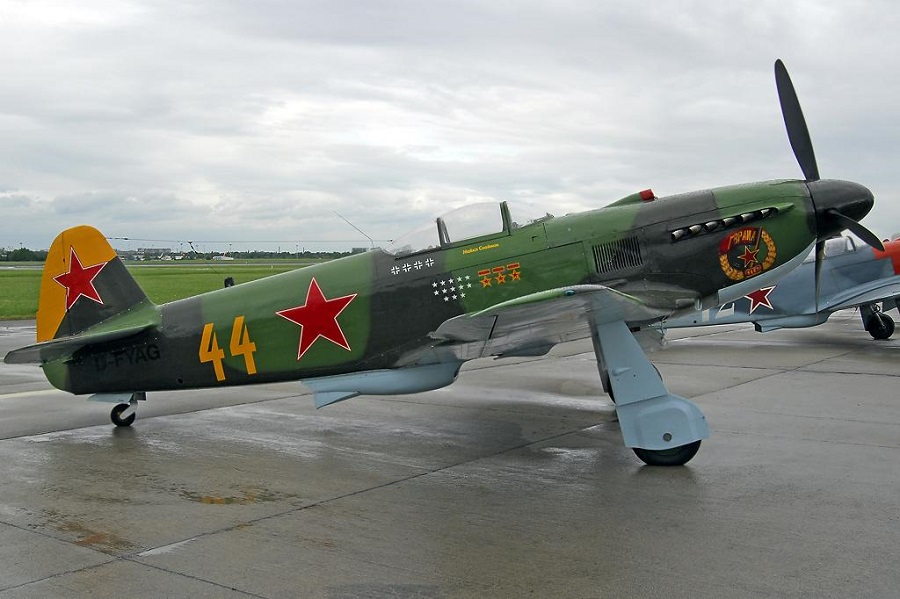
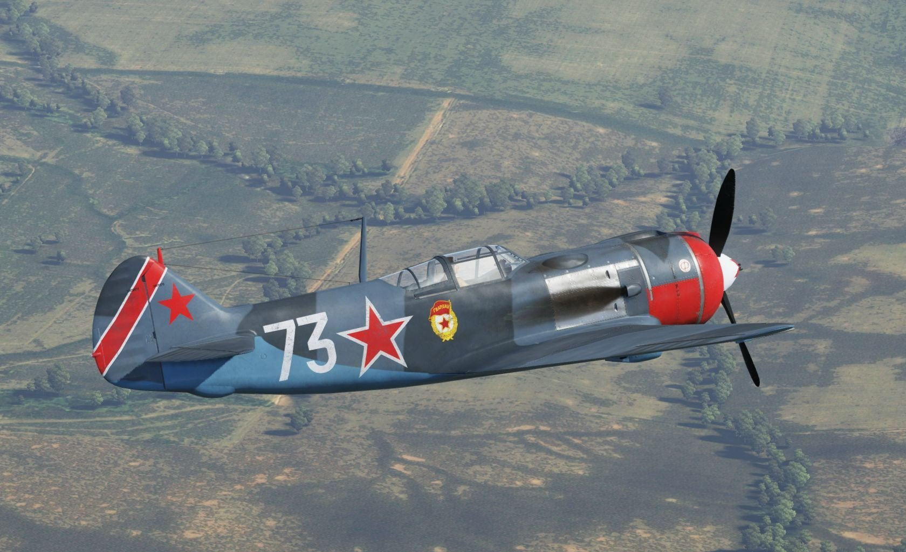
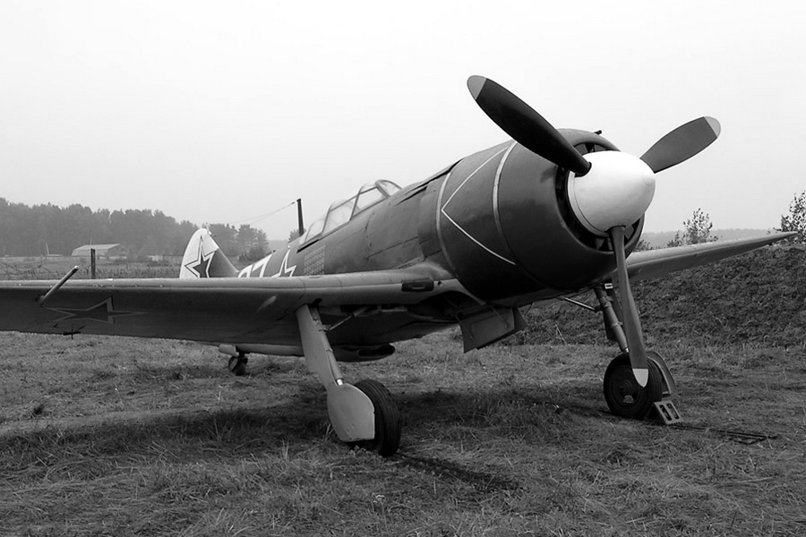
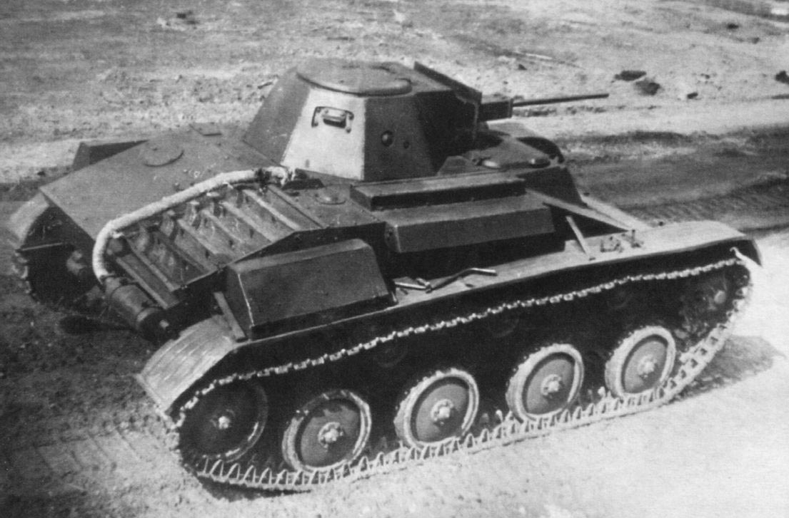
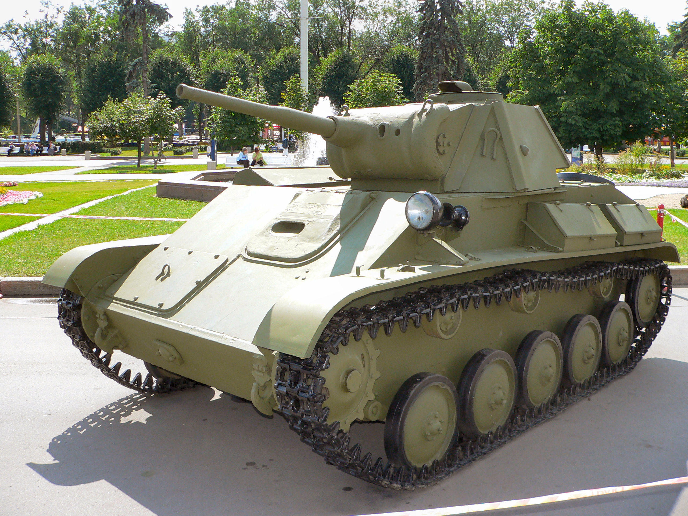
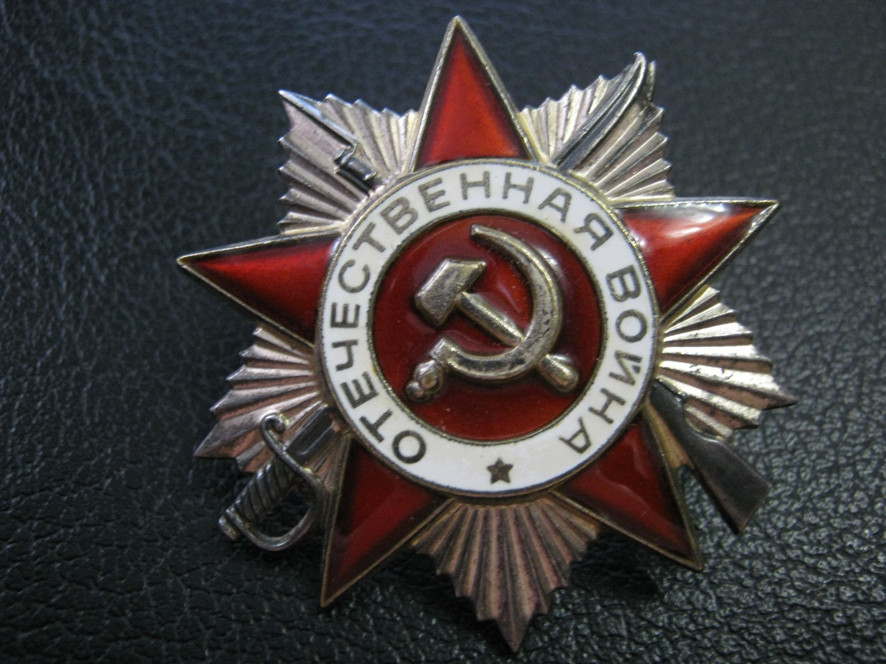
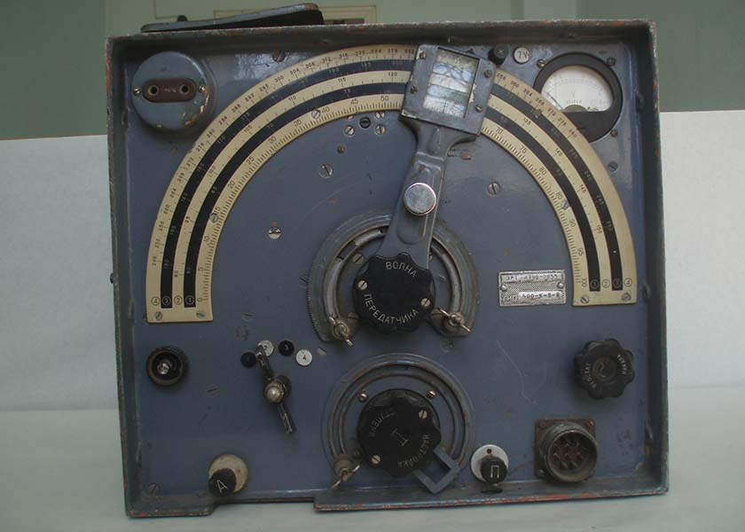
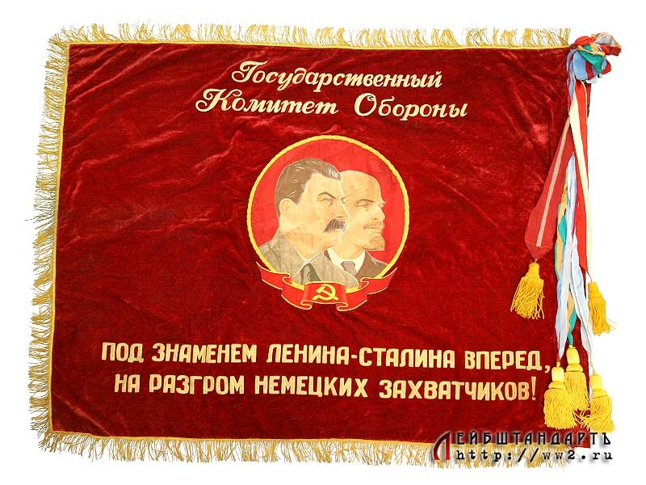

Авиазавод №21
В годы войны горьковский авиазавод выпустил 19 202 самолета типов ЛаГГ и Ла. Горьковчане дали фронту каждый третий истребитель. В 1944 году, когда сборку самолетов перевели на конвейер, завод выдавал по 26 машин в сутки!
Производство цельнодеревянного истребителя ЛаГГ-3 конструкции Лавочкина, Горбунова и Гудкова на авиазаводе начали в первом полугодии 1941 года. Однако в начале 1942 года Государственный Комитет Обороны приказывает переключиться на производство истребителей Як-7. Но заводчане отстояли «родной» ЛаГГ, пообещав резко улучшить его летные характеристики.

Конструкторы Слепнев, Склянин, Миндров и Федоров предложили установить на ЛаГГ-3 звездообразный двигатель воздушного охлаждения М-82 мощностью 1650 л.с. В марте 1942 года летчик-испытатель Василий Мищенко поднял в воздух будущий Ла-5 (конструкторы С.А. Лавочкин, С.М. Алексеев), а в мае того же года Комитет Обороны принял постановление о серийном производстве нового истребителя. Боевое крещение Ла-5 получили под Сталинградом.

Следом за Ла-5 был создан усовершенствованный самолет Ла-5ФН. После того, как на него установили двигатель мощностью 1850 л.с., летные характеристики истребителя значительно улучшились.
А к концу 1943 года наши конструкторы выдали новую разработку – Ла-7. Истребитель имел тот же двигатель и размер, что и Ла-5, но с увеличенным объемом топливных баков. Также на 100 кг был облегчен планер, установлены три пушки 20-миллиметрового калибра. Новая машина могла развивать скорость до 680 километров в час. Именно на Ла-7 летал трижды Герой Советского Союза Иван Кожедуб.

В течение всей войны ремонтные бригады завода регулярно выезжали на фронт для восстановления самолетов, пострадавших в бою. Всего горьковские ремонтники возвратили в строй несколько тысяч машин. Кроме того, заводчане сдали 1 250 тысяч рублей на строительство эскадрильи «Валерий Чкалов».
За образцовое выполнение заданий правительства по выпуску боевых самолетов завод № 21 в октябре 1941 года был награжден орденом Трудового Красного Знамени. В годы войны коллективу завода 25 раз вручалось переходящее Красное Знамя Государственного Комитета Обороны, а 587 работников за самоотверженный труд были награждены орденами и медалями.
Горьковский автозавод
Автозавод в годы войны производил легкие танки Т-60 и Т-70, самоходно-артиллерийские установки СУ-76, броневики БА-64, мины, реактивные снаряды М-13 и мины для 82-мм минометов. Как указывает «Книга памяти нижегородцев, павших в Великой Отечественной войне 1941-1945 годов», коллектив завода производил также моторы для танков, походно-зарядные станции, катера для ВМФ, обеспечивал все автомобильные и почти все артиллерийские предприятия колесами, выпускал авиационные моторы для пикирующих бомбардировщиков Пе-2, был единственным заводом в стране по производству колясок к армейским мотоциклам. На ГАЗе было произведено 30% танков и самоходно-артиллерийских установок, 52% грузовиков от общего количества, выпущенного промышленными предприятиями СССР.
Продукция создавалась в тяжелейших условиях, так как во второй половине 1941 г. из 65 предприятий-смежников 43 находились в процессе эвакуации, нужно было срочно налаживать новые кооперационные связи.
21 октября 1941 года директор автозавода Иван Лоскутов получил телеграмму от Сталина с заданием в ближайшие два-три дня резко увеличить выпуск танков Т-60 для защитников Москвы. Уже в ноябре первые горьковские «шестидесятки» были поставлены в войска. Немцы прозвали новые машины «неистребимой саранчой». Легкий танк Т-60 был разработан в августе 1941-го на московском заводе № 37 Николаем Астровым. Конструктор лично перегнал опытный Т-60 из Москвы в Горький, и в середине октября танк запустили в серийное производство. Конструкторы ГАЗа во главе с Дедковым и Кригером упростили конструкцию Т-60 и адаптировали ее к производственным возможностям ГАЗа. В 1941-42 годах ГАЗ дал фронту половину всех танков Т-60 – 2 962 из 5 920, выпущенных всеми советскими предприятиями.

Рабочие смены продолжались по 20-30 часов с перерывами на еду и короткий сон. Трудились все – и старики, и женщины, и подростки. 19 марта 1942 года за успехи в работе Горьковскому автозаводу был вручен орден Ленина.
На смену Т-60 в 1942 году пришел усовершенствованный легкий танк Т-70. Конструкторская группа Николая Астрова разработала эту машину на ГАЗе еще осенью 1941 года. Серийное производство «семидесяток» ГАЗ начал в марте 1942 года. Всего ГАЗ дал фронту 6 843 «семидесятки», что составило 75 процентов от общего числа выпущенных в СССР Т-70. За успешную разработку легких танков коллективу конструкторов автозавода во главе с А.А. Липгартом и Н.А. Астровым дважды присваивалась Сталинская премия.

Кроме танков, ГАЗ поставлял на фронт знаменитые «полуторки» ГАЗ-АА. В годы войны ГАЗ перешел на выпуск его упрощенной версии, у которой двери были заменены брезентовыми полотнищами, крылья были выполнены из кровельного железа, отсутствовали тормоза на передних колесах, и была только одна фара. И только в 1944 году довоенная комплектация была частично восстановлена: появились деревянные двери, передние тормоза, откидные боковые борта и вторая фара.
В июне 1943 года гитлеровцы ожесточенно бомбили автозавод. Погибло много рабочих, было повреждено 50 зданий, более девяти километров конвейеров, около шести тысяч единиц оборудования. Сто дней потребовалось, чтобы полностью восстановить цехи и начать работать на полную мощность. За быструю ликвидацию последствий налетов вражеской авиации, за успешное выполнение заданий Государственного Комитета Обороны по выпуску новых видов боевых машин и вооружений 9 марта 1944 года автозавод был награжден орденом Красного Знамени. Третий орден на знамени предприятия – Отечественной войны I степени – появился 16 сентября 1945 года. В годы войны автозаводу 33 раза присуждалось переходящее Красное Знамя Комитета Обороны.

Завод имени Ленина (НИТЕЛ)
Еще с 1929 г. на предприятии организуется выпуск военных телефонов типа УНА, производство которых продолжается и в годы войны.
С 1935 г. завод осваивает выпуск самолетных и танковых переговорных устройств СПУ и ТПУ. В годы Великой Отечественной все танковые и самолетные заводы СССР обеспечивались переговорными устройствами горьковского производства.
Производство радиостанций начинается на заводе в 1929 году, причем завод является не только производителем, через несколько лет он начинает самостоятельно разрабатывать радиостанции; всего на предприятии было разработано 17 типов радиостанций, среди которых РСБ «Двина», РСВ-С «Луч», РАФ «Волга» и целый ряд других, которые стали родоначальницами большого семейства наземных радиостанций, активно применявшихся Красной армией в годы войны.

4 ноября 1941 г. предприятие подверглось бомбежке немецкой авиации. Погибло 94 человека, в том числе и директор завода, один из корпусов был полностью разрушен. Но завод продолжал работать и наращивать выпуск продукции.
В годы Великой Отечественной предприятие выпускало свыше 70 различных изделий, значительную часть которых составляли радиостанции. На фронт было поставлено 50 422 комплекта радиостанций, 112 000 комплектов переговорных устройств для самолетов, танков и кораблей, 234 000 полевых телефонных аппаратов. Почти все самолеты советской авиации, все военные аэродромы, значительная часть сухопутных соединений, береговые дальней связи — корабли и подводные лодки — имели радиостанции производства завода им. Ленина.
За массовый качественный выпуск продукции в годы ВОВ 21 января 1944 завод был награжден орденом Ленина, а в феврале 1946 на завод на вечное хранение передано Красное Знамя ГКО.
